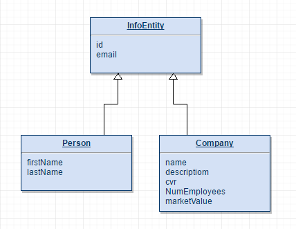

In this CA project, we are exposed in RESTful programming wherein clients possess the information to identify, modify or delete a web resource and passed to the service through HTTP request. We used REST API in making this project for handling information about people and companies. All information necessary to service the request is contained in the URL, query parameters, body or headers. And this was given in our CA project description. As an implementation, it was developed with JAX-RS that provides support in creating web services based on REST architectural pattern. It generates the abstract class ApplicationConfig for us that serves as the base application URI, named as “api”. Then, we created some other classes that will be hosted at the URI path provided in the project such as “/person” and “/company” with some corresponding methods that will process the HTTP requests whether it is for GET or POST and be identified as JSON Objects.
We’ve made error handling by simply returning error messages in a JSON format. We used GeneralExceptionMapper class to provide error response in JSON format so every time it encounters an exception, it will return the corresponding error message. REST API uses JSON, which is basically a universal connector for data on the internet and most programming languages have an easy way to convert into their standard data structures such as the used of gson that’s why, it is mostly used media type format in our program.
List of REST-API services:
We developed test cases in our Façade class as it communicates with our database through an entity manager. We made unit testing in the methods that will probably have some errors that will surely affects the functionality of the program such as the get, add and look by methods. We also used a new persistence unit connected to a database which is just meant for testing, called "pu_test".
We have implemented REST-Assured framework from Jayway to execute automatically REST web services tests. It can easily validate and specify parameters, headers, cookies and body from response. First, it has to add the dependency required and the setup before class such as the baseURI, port, basePath and defaultParser for JSON. We made some tests for the GET methods from the PersonFacadeREST service class and CompanyFacadeREST service class that will verify the status code which is expected to be 200-OK and some values from the returned JSON properties. We also added some tests for the error handling by checking the status code whenever an invalid ID or path was given. Lastly, we have some tests for the POST methods which is a little bit tricky. We are aware that the test runs successfully but chose to just put an ignore annotation because we don’t want to insert a lot of same data in the database every time it does the automation tests.
UML
| DAY | Task | Contributors |
|---|---|---|
| 01 | Remote Database Setup | Daniel, Cherry, Waqas |
| Design Entity Classes | Rasmus | |
| Facade Class | Daniel,Cherry | |
| 02 | Script-populating Companies and Persons | Cherry |
| JUnit Tests | Cherry, Daniel | |
| Exception Error Handling | Waqas | |
| REST API Web Services | Rasmus | |
| 03 | Rest-Assured Test | Cherry |
| Front End - Post Form for Person | Waqas | |
| Front End - Post Form for Company | Daniel | |
| Front End - Search | Rasmus | |
| 04 | Documentation | Cherry, Rasmus |
| Finalize web page | All | |
| Deploy final version in digital ocean | All |